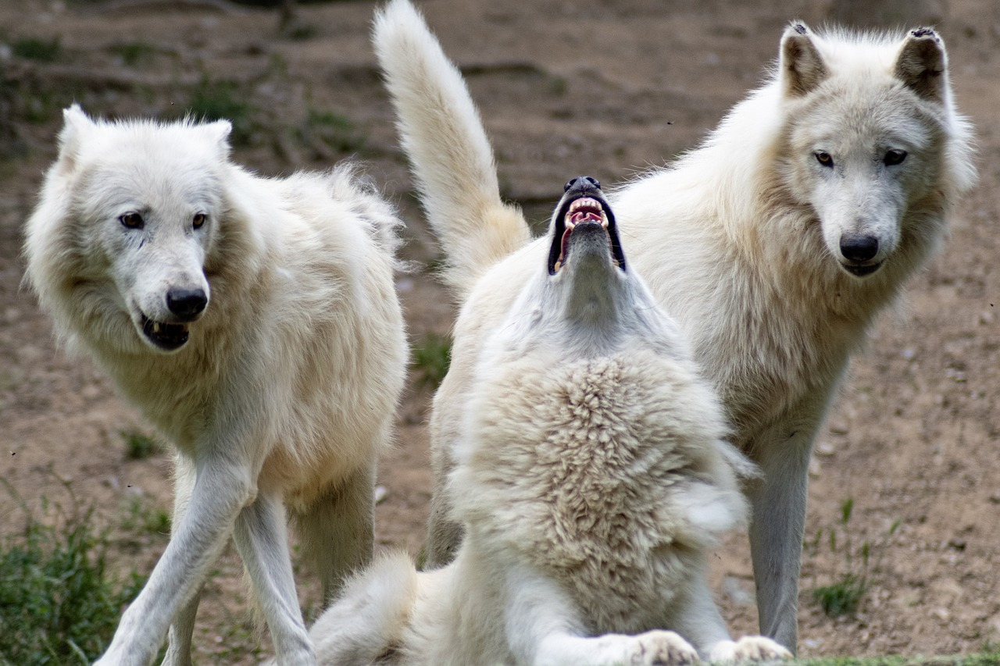

My Wolf
Wolves are very beautiful creature, what makes them stand out from the other animals is the way they socialize. A male wolf mates with only one female for the rest of his life, and when a wolf gets old, they don't just leave him/her to die but take good care their old ust like humans do.
- Scientific Name: Canis Lupus Lupus
- Average Length: 4.5-6 feets
- Average Lifespan: 6 and 8 years
- Habitat: Artic tundra, desne forests, mountains.
Wolves are large, social carnivores known for their strong pack dynamics and adaptability. Weighing between 80 to 100 pounds, they hunt large prey like deer and elk and communicate through howls. Packs have a hierarchical structure led by an alpha pair. Despite historical widespread distribution, wolf populations have declined due to habitat loss and human conflict, prompting conservation efforts. For more information, refer to National Geographic.